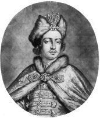

Çar Büyük Petro (1672-1725), 1682’den 1725 yılına kadar kırk üç yıllık hükümdarlığı sırasında ulusunu büyük bir dünya gücü olması arzusuyla yönetti. Fransa Kralı XIV. Louis sonrasında onu kendisine model alarak, mutlak bir kral olarak ülkeyi yönetti. Başkenti St. Petersburg’ta, Versailles’yı gölgede bırakması niyetiyle göz alıcı sarayını yaptırdı.

Petro’nun tahta çıkmasından hemen önce Rusya, ne tam Avrupalı ne de tam Asyalıydı. Ruslar, Hıristiyandılar. Ama tüm Avrupa ülkelerinin birleşiminden daha geniş olan, büyüyen ülkelerinin antik Asya imparatorluğu Çin ve İran ile sınırları vardı. Rusya’nın büyük bölümü, eski Moğol İmparatorluğu’nun bir parçasıydı.
Petro, Rusya’nın yüzünü doğruca Avrupa kampına döndürdü. Rus başkentini Moskova’dan Baltık Kıyısı’na kurduğu bir şehir olan St. Petersburg’a taşıdı. Avrupa ülkeleri ile daha yakın bağlar kurmaya çalıştı, giyimde Avrupa geleneklerini benimsedi ve Batı’yı ziyarete giden ilk Rus lideriydi. Petro, Avrupa standartlarını kopyalamak için Rus ordusunu ve hükümetini yeniden düzenledi.
Çar şahsen, zalim, öfkesi burnunda ve sıkı içen biriydi. 1698’de bir İngiliz seyyah ondan “Mizacındaki değişkenliği ile yargılama arzusu onda çok sık görünürdü.” diye bahsetti. Petro, aynı zamanda cüsse olarak da 2 metreden uzun boyuyla, dev gibiydi.
1725’te Petro’nun ölümünden sonraki iki yüzyılda Rus İmparatorluğu, büyük bir Avrupa gücü oldu. Ancak çarların diktatörlüğü ve 1861’e kadar Rusya’da terk edilmeyen toprağa bağlı köleliğin mevcudiyeti, güçlü bir Rus orta sınıfının gelişimine engel olmuştu. Petro’nun mirasçıları Rusya’yı 1917’deki devrime kadar yönetti.
EK BİLGİLER:
1. Sakal bırakılmasının önüne geçmek için Petro, geleneksel Rus sakalı bırakmak isteyen asilzadelere 100 ruble ve sıradan halka da bir kopek vergi uyguladı.
2. 1917’deki komünist devrimden sonra, Rus başkenti eski yeri Moskova’ya getirildi. St. Petersburg, Vladimir Lenin’in onuruna Leningrad olarak yeniden isimlendirildi, ama 1991’de Sovyetler Birliği’nin yıkılmasının ardından ismi iade edildi.
3. Petro tarafından yaptırılan saray, St. Petersburg’ta, dünyanın en büyük sanat müzelerinden biri olan şimdiki Hermitage müzesidir.